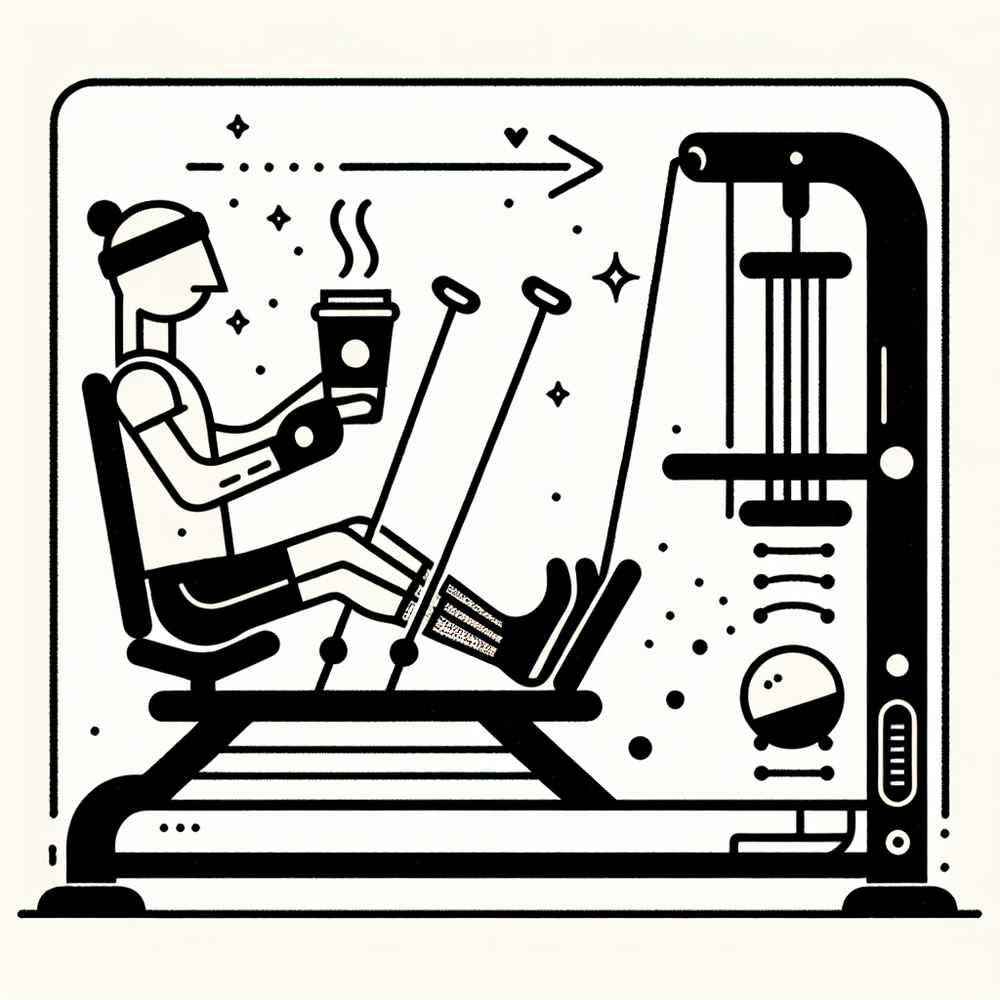

Les chaussettes grippy sont-elles obligatoires en Lagree ?
Les chaussettes grippy sont-elles obligatoires en Lagree ?
Imaginez-vous sur une machine MegaPro, concentré sur chaque mouvement, chaque respiration, dans le premier studio Lagree de la région. Vous êtes prêt à franchir un nouveau seuil de votre pratique sportive. Mais un doute persiste: avez-vous besoin de ces fameuses chaussettes grippy pour réussir? Décodons ensemble ce mystère !
Le sport Lagree : une méthode révolutionnaire
Le Lagree, ce sport innovant, a pris d'assaut le monde du fitness grâce à sa méthode de renforcement musculaire haute intensité mais sans impact. Ici, au Studio Lagree d'Anglet, situé au cœur de DOZ, vous pourrez découvrir cette pratique sur la machine MegaPro, une référence en la matière.
La technique impressionne par son efficacité :
- Renforcement musculaire rapide : chaque session travaille l'ensemble de votre corps.
- Adaptabilité : elle convient à tous, indépendamment du niveau de forme physique.
- Préservation des articulations : une approche sans impact pour minimiser les blessures.
Mais cette expérience peut être bonifiée par un simple accessoire: les chaussettes grippy.
Pourquoi des chaussettes grippy ?
Les chaussettes grippy, parfois perçues comme un simple gadget, remplissent en réalité un rôle crucial durant une session Lagree. Elles offrent plusieurs avantages clés :
- Adhérence maximale : Les petites pastilles en caoutchouc sous la chaussette garantissent une bonne stabilité sur la machine.
- Confort et sécurité : Elles préviennent les glissements, réduisant le risque de blessure.
- Hygiène : Une protection contre la sueur et les bactéries sur les surfaces partagées.
Dans quel contexte sont-elles obligatoires ?
Au Studio Lagree du DOZ, nous adoptons une approche équilibrée. Si aucune loi n'impose le port des chaussettes grippy, elles sont fortement recommandées pour optimiser votre sécurité et votre confort. Les séances étant déjà intenses, autant éviter les tracas inutiles.
De plus, l'esprit 'Instant Brut' qui anime notre espace prône une expérience de haute qualité sans artifices. Ainsi, endosser ces chaussettes, c'est non seulement améliorer votre pratique, mais aussi s'inscrire dans une démarche respectueuse de soi et des autres.
Les alternatives aux chaussettes grippy
Bien que les chaussettes grippy soient un choix judicieux, d'autres options peuvent être envisagées pour ceux qui débutent ou souhaiteraient varier :
- Pieds nus : une option possible mais avec moins d'adhérence.
- Chaussettes classiques : accompagné de vigilance supplémentaire pour éviter les glissements.
- Autres types de chaussettes antidérapantes : testez-les pour trouver la paire qui vous convient le mieux.
Comment choisir les bonnes chaussettes grippy ?
Choisir la bonne paire de chaussettes grippy est un jeu d'enfant si l'on sait quoi chercher :
- Matière respirante : préférez le coton ou le bambou pour éviter les coups de chaud.
- Petits points de silicone : ceux-ci ajoutent une adhérence supplémentaire.
- Taille ajustée : assurez-vous qu'elles restent bien en place.
À DOZ, bien que nous ne proposions pas encore nos propres chaussettes grippy, nous serons ravis de vous guider pour trouver la paire idéale pour enrichir votre expérience Lagree.
Conclusion : Prêt à débuter votre prochain cours Lagree ?
En fin de compte, le port des chaussettes grippy vous est personnel; néanmoins, elles constituent une sage décision pour profiter pleinement de l'efficacité du Lagree, en sécurité et dans le confort.
Venez vivre l'expérience Lagree au DOZ à Anglet, explorez notre studio, découvrez notre Coffee Shop et plongez au cœur de notre philosophie 'Healthy & Surf'. Réservez dès maintenant votre cours, et pourquoi pas, dégustez un café de spécialité pour prolonger ce moment de qualité entre effort et réconfort !